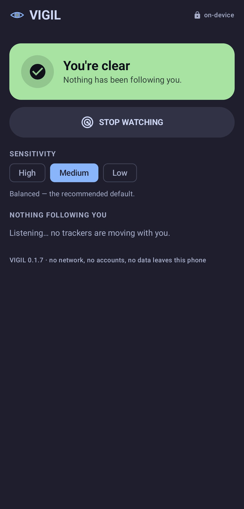

Apple Find My / AirTag
Mfg data, company 0x004C, type 0x12. Separated when the "maintained" status bit is cleared. ~24 h re-link window.
What's been following you? A native Android app that watches for personal item-trackers — AirTags, Tile, Samsung SmartTags, Google Find My — that are travelling with you over time. A tracker being near you means nothing. The signal is persistence.

Prototype / work in progress. Debug-signed APK — sideload; no Play Store. Read the README.
OVERWATCH is spatial — what surveillance is watching this place, right now. VIGIL is temporal — what has been with you, across time and places. VIGIL reuses OVERWATCH's proven passive-scanning stack and adds a persistent on-device store to reason about a tracker's history.
VIGIL recognises each BLE wire format and, where the ecosystem signals it, filters to the separated-from-owner state — the only state in which a following tracker is even detectable. Chipolo, Pebblebee, eufy and the rest inherit whichever network their SKU joined, so VIGIL detects the network.
Mfg data, company 0x004C, type 0x12. Separated when the "maintained" status bit is cleared. ~24 h re-link window.
Service data 0xFEAA, frame 0x40/0x41. Frame 0x41 is the cleartext separated state.
Service data 0xFD5A; the state byte flags lost / overmature-lost — the following state.
Service data 0xFEED / 0xFEEC. No separated signal and a static MAC — always findable, indefinitely.
Service data 0xFCB2; the near-owner bit (byte 14 LSB) marks separation. The cross-industry standard the whole ecosystem is converging on — VIGIL parses it today.
A tracker is escalated only when it clears the co-movement test — the same device, seen at many of your distinct places, over a sustained window, while close enough to actually be on you.
Geohash-7 cells; N = 2 / 3 / 4 by sensitivity. A tracker seen only where you dwell isn't following — it lives there.
Debounced to one per 15 min; T = 30 / 45 / 90 by sensitivity. Persistence across time, not a single blip.
It must have been genuinely close — on-body / in-bag — at least once. This is the piece AirGuard omits; it rejects "a Tile in a passing car."
Seen, logged, geotagged — but hasn't cleared the co-movement test. No alarm.
Co-moving across your places. VIGIL is watching it closely.
Confirmed following you. Surfaced with the "Make it ring" and hot/cold finder tools.
Tap a tracker to approve it — your own AirTag, your partner's Tile — and it never alerts again.
VIGIL learns the places you dwell (home, work) as anchors; a tracker seen at an anchor across several days is auto-marked Known (home) — so household tags fall silent on their own, entirely on-device.
Every shipping detector — AirGuard, iOS, Android's built-in — keys on device identity. A key-rotating clone (Positive Security's Find You: ~2,000 Find My keys, a new one every 30 s) looks like 2,000 one-off devices and evades them all — it tracked a phone for five days with zero alerts.
A rotating clone is one physical radio holding an unbroken,
close-range, co-moving RF presence — even as its identity churns
thousands of times faster than any standards-compliant tracker is
allowed to. VIGIL's PresenceEngine pairs a CUSUM churn
trigger with an identity-agnostic presence-track confirmer and the
co-movement gate — an "identity-path × churn-path squeeze" that leaves
no safe rotation rate. First version implemented and unit-tested
against synthetic clone/ambient traces; field-tuning is what remains.
INTERNET permission at allThere is no server, no account, no telemetry. Every tracker, every sighting, and the entire learned baseline live in an on-device SQLite database and never leave the phone. Detection is entirely passive — it listens only.
Tap a suspected tracker to connect over GATT and play its own sound — the DULT-standard way for a victim to locate a hidden AirTag / Find My / Chipolo tag.
A passive proximity meter — warmer/colder from live signal. Works even on silent or modified tags that refuse to ring, which is exactly when you need it.
Build from source, read the paper, or file issues: github.com/KaraZajac/VIGIL · the paper